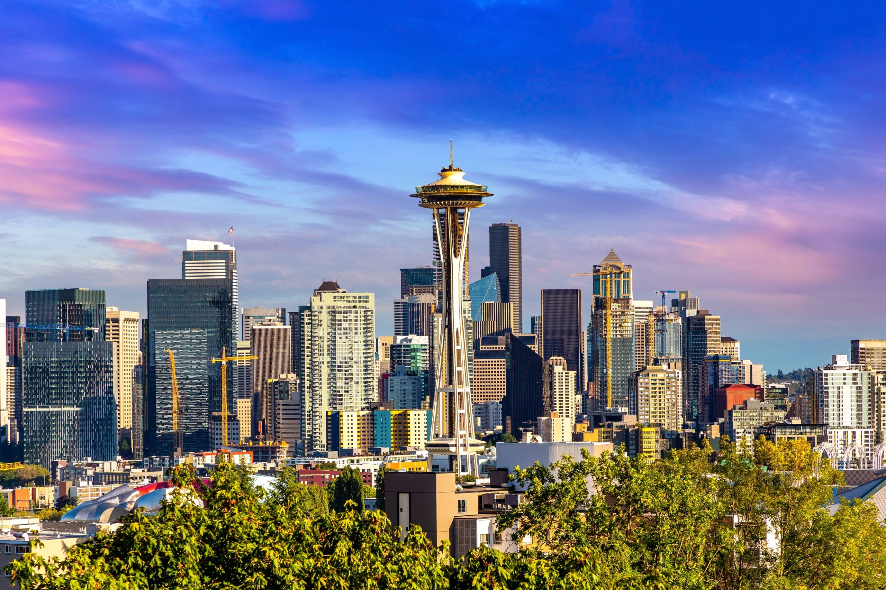
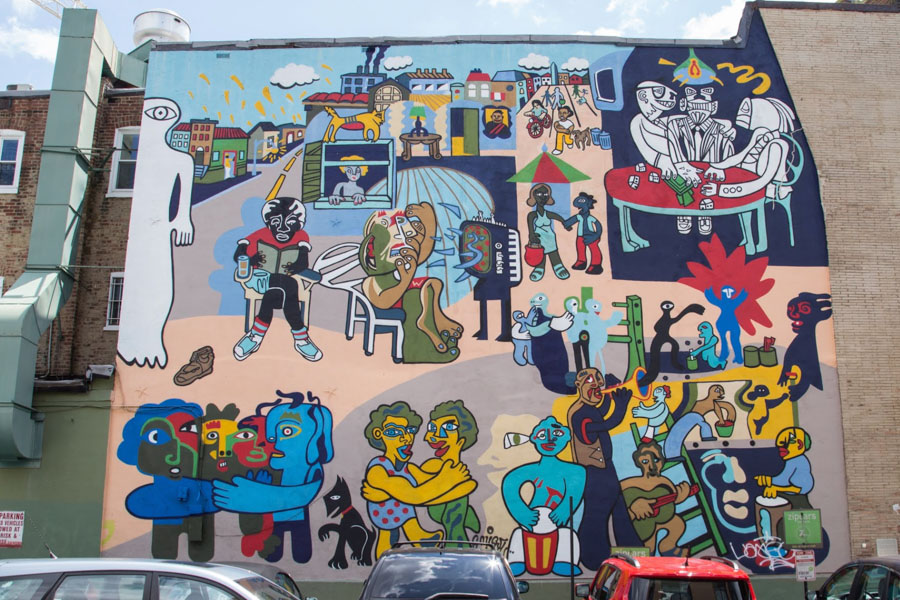
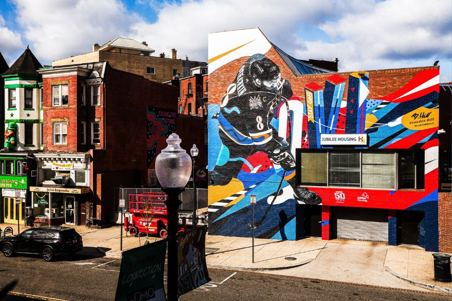
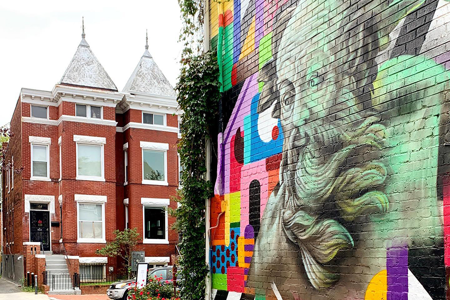
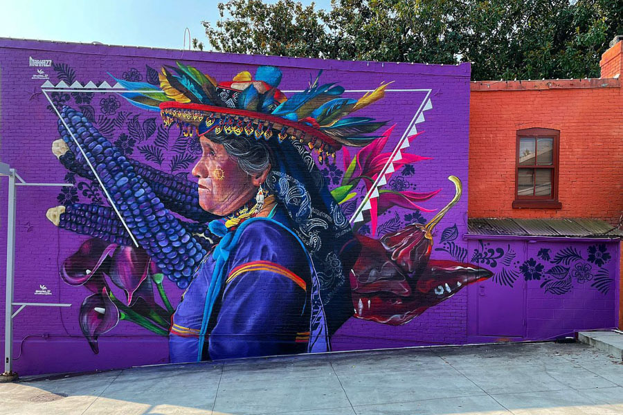

ABOUT WASHINGTON
On November 11, 1889, Washington became the 42nd state to enter the Union. It is the only state in the Union that is named for a president. Washington was nicknamed "The Evergreen State" by C.T. Conover, pioneer Seattle realtor and historian, for its abundant evergreen forests. The nickname has never been officially adopted.

Where to Find the Most Colorful Street Murals in Washington, DC
Mural Un Pueblo Sin Murales
The title of this striking mural on Adams Mill Road translates to: A People Without Murals are a Demuralized People. The piece, which is located on the side wall of Kogibow Bakery, was created by artists Felipe Martinez, Carlos Salozar, Carlos Arrien and Juan Pineda in 1977. It is the only mural in the neighborhood created by Latino immigrant artists. The mural was revitalized in 2005 by Sol & Soul, a local arts organization, in collaboration with one of the original artists, Juan Pineda, and renovated again by Pineda in 2011 after an earthquake in DC. 1817 Adams Mill Road NW

G.O.A.T (Gr8est of All Time)
Neither of these dishes is native to NYC, but both have gone pro in this most metropolitan of cities. Where do you go to try one—or ideally both—of these dishes? Lili’s Bake Shop on 7th & 53rd. We also like Veniero’s, City Cakes, and Buttercup Bake Shop. Their specialty is the Dirty Cheesecake which is delicious, but you could cross cheesecake, red velvet, and the famous black-and-white cookie off your list here. D-LISH! 1800 Columbia Road NW

Neptune in Bloomingdale
Head to DC’s Bloomingdale neighborhood to grab a slice of pizza from Bacio Pizzeria and check out this vibrant mural in the neighboring alley. This bright, contemporary piece references mythology and was created during the 2019 ART ALL NIGHT DC event by artists Jeff Huntington and Juan Pineda. 81 Seaton Place NW

Alma Indigena
Created by artist Victor Quinonez in 2021, Georgetown's newest mural is located at 1564 Wisconsin Avenue NW. Inspired by the photography of Diego Huerta and the people of the western Mexican state Jalisco, the detailed artwork features an indigenous Wixárika Elder as well as blue maize and guajillo peppers, ingredients used in many native cultures. 1564 Wisconsin Avenue NW

Things to Do in Washington DC: Your Ultimate Guide to America’s Capital
Washington DC isn’t just the political heart of America – it’s a treasure trove of world-class museums, iconic monuments, and unforgettable experiences waiting to be discovered. Whether you’re a history buff, culture enthusiast, or simply curious about the nation’s capital, there are countless things to do in Washington DC that will leave you inspired and amazed. From the hallowed halls of the Smithsonian to the moving memorials that honor our nation’s heroes, DC offers something extraordinary for every traveler. Get ready to explore a city where every corner tells a story and every visit creates lasting memories.
Smithsonian National Museum of Natural History
The Smithsonian National Museum of Natural History stands as one of Washington DC’s most captivating attractions, offering an incredible journey through billions of years of natural history that will fascinate visitors of all ages.
Lincoln Memorial
The Lincoln Memorial stands as one of Washington DC’s most iconic monuments, offering visitors a profound connection to American history and the legacy of the 16th President. This majestic Greek Doric-style temple, positioned at the western end of the National Mall, provides an awe-inspiring experience that combines architectural beauty with historical significance.
National Gallery of Art
The National Gallery of Art stands as one of Washington DC’s premier cultural destinations, offering visitors an unparalleled journey through centuries of artistic masterpieces that will captivate art enthusiasts and curious travelers alike.
National Air and Space Museum
The National Air and Space Museum stands as one of Washington DC’s most captivating attractions, offering visitors an extraordinary journey through the history of flight and space exploration. This world-renowned museum houses an incredible collection of aircraft and spacecraft that have shaped human history, including the iconic Wright Brothers’ 1903 Flyer and the Space Shuttle Discovery.
Library of Congress
The Library of Congress stands as the world’s largest library and a treasure trove of human knowledge that book lovers and culture enthusiasts absolutely cannot miss. With an astounding 532 miles of shelves housing 115 million items, this magnificent institution adds 7,000 new pieces to its collection every working day, making it a living, breathing repository of global heritage.